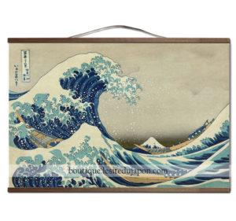

Collection 36 vues du Mont Fuji, le travail de Katsushika Hokusai, le maître de l’estampe japonaise, décliné dans une collection unique de toiles par Utsukushii.
Les toiles du maître sont réalisées par impression sophistiquée sur de la toile, ultra-résistante, et mises en beauté par leur encadrement bois unique. Des modèles réduits pour décorer toutes les parties de maison, et des modèles géants pour maître en valeur votre intérieur.
La série des 36 vues du Mont Fuji fût édité entre 1831 et 1833. A l’époque déjà, elle fût accueillie comme un phénomène dans le Japon d’Edo qui était amateur d’estampes, et elle permit au maître d’y acquérir la postérité. La série sera rééditée de multiples fois par la suite, et la “grande vague de Kanagawa” deviendra un des chefs d’oeuvre de la peinture japonaise, et même un symbole, encore vivace aujourd’hui, de l’esthétisme japonais.
vOir les créttions 